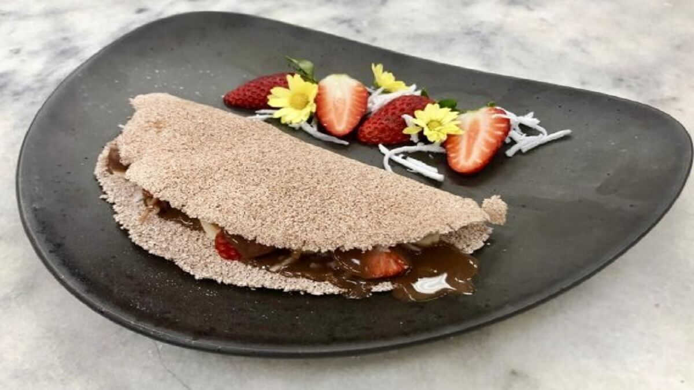

Tapioca Com Manteiga da Terra

A tapioca é prato consumido amplamente em todo nordeste do Brasil. Preparado a partir da farinha de uma planta muito conhecida no nordeste do país que possuí dois nomes distintos: Macaxeira e Mandioca
A partir da farinha da mandioca é possível fazer vários pratos sendo o maís conhecido a tapioca.
- Goma de Tapioca
- Manteiga da Terra
- Pegue uma frigideira redonda de tamanho a gosto
- Se sua goma estiver hidratada (no formato de um tablete consistene) você terá de perenerá-la. Caso não, pule pro próximo passo
- Aquela a frigideirafogo baixo
- Quando a frigideira estiver quente povilhe a goma ao redor da tacha até que ela esteja completa de goma. Nesse passo é possível utilizar uma colher para igualar a goma, levemente, na frigideira
- O ponto da tapioca é algo difícil. Então quando a borda de toda a goma que está na frigideira começar a ficar seca (e levantar um pouco) é o ponto de virar por mais 30 segundos a 1 minuto e depois retirar da frigideira e colocar num prato
- Com a tapioca ainda quente coloque manteiga a gosto